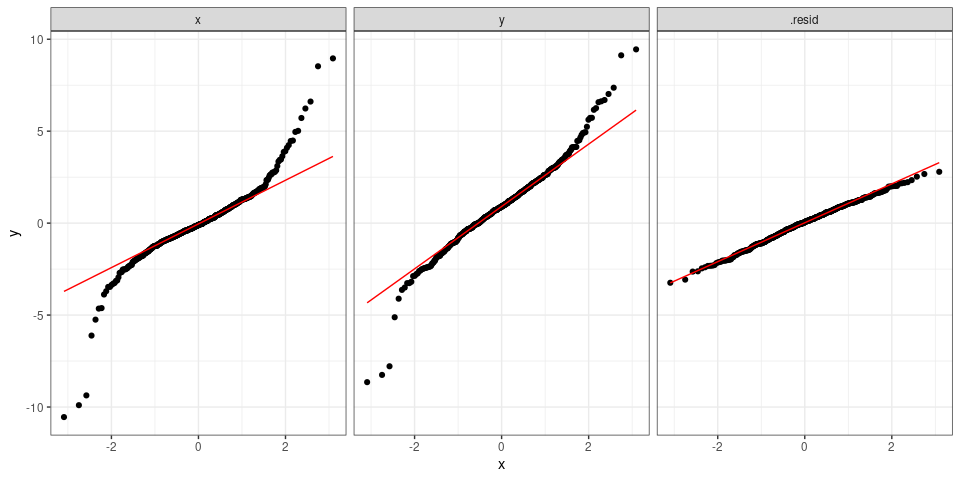
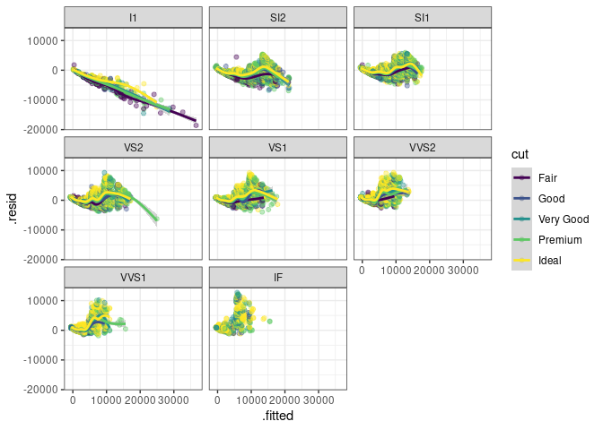
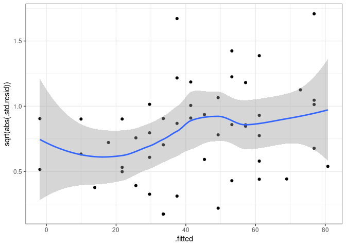
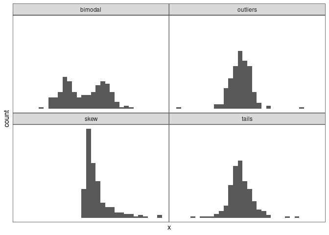
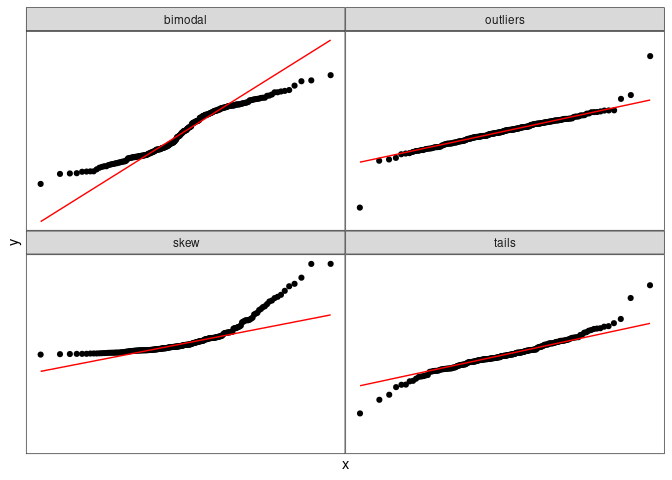
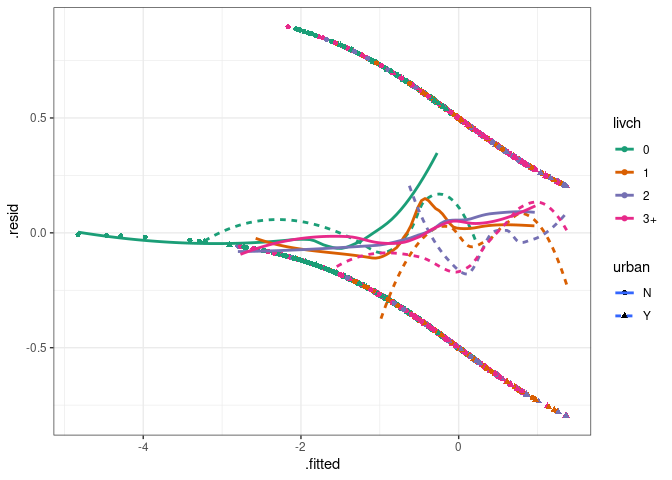
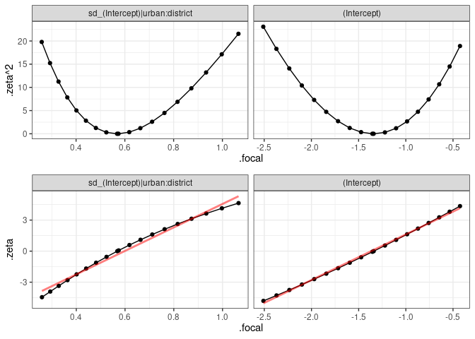
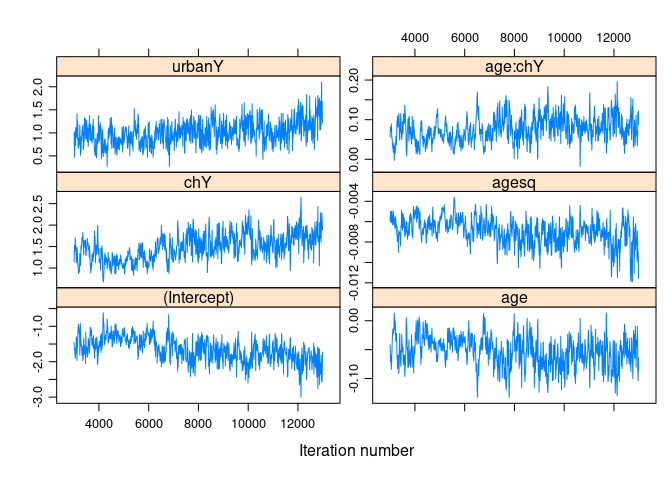
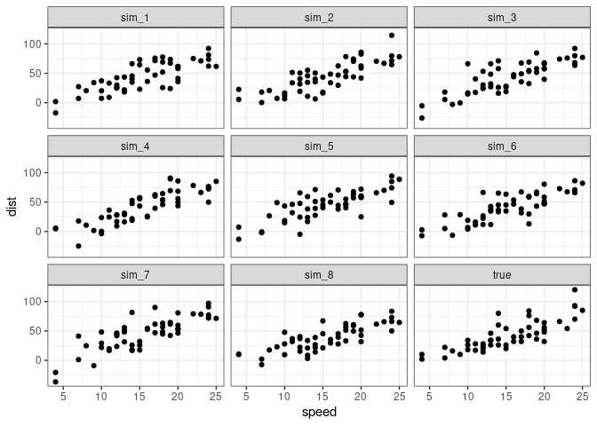

library(tidyverse)
theme_set(theme_bw())
library(car)
library(broom)
library(broom.mixed)
library(magrittr)
## modeling
library(lme4)
library(MCMCglmm)
library(glmmTMB)
library(coda) ## Bayesian methods (trace plots etc.)
library(lattice) ## built-in
library(cowplot)
library(nullabor) ## visual inferencem0 <- lm(y~x,dd)
a0 <- (augment(m0)
%>% select(x,y,.resid)
%>% gather(type,value)
%>% mutate(type=factor(type,levels=c("x","y",".resid")))
)(ggplot(a0,aes(sample=value))
+ stat_qq()
+ facet_wrap(~type)
+ stat_qq_line(colour="red")
)
look for mis-specification (in order!):
influential points/groups (leverage/outliers/etc.)
upstream problems affect downstream diagnostics
m1 <- lm(price~carat,diamonds)
a1 <- augment(m1,data=diamonds) ## include original data
ggplot(a1,aes(.fitted,.resid)) +
geom_point(alpha=0.1)+geom_smooth()ggplot(a1,aes(.fitted,.resid,colour=cut)) +
facet_wrap(~clarity) +
geom_point(alpha=0.4)+geom_smooth()
useful to use dynamic graphics ggmap::gglocator (may need devtools::install_github("dkahle/ggmap"))
acepack::avas, Tibshirani (1987))use standardized residuals
(adjust variance for position)
m2 <- lm(dist ~ speed, data=cars) ggplot(augment(m2),aes(.fitted,sqrt(abs(.std.resid))))+ geom_point()+geom_smooth()

sandwich package: Zeileis (2006))
stat_qq(), stat_qq_line()plot.lm(.,which=3); qqnorm()car::qqPlot (adds confidence envelope)
avas, Box-Cox (MASS:boxcox), Yeo-Johnson etc. \[`?car::bcPower`\])rarely tested! can’t detect without some kind of structure in data
gls() on residualssize=abs(.resid), colour=sign(.resid) (or colour ramp)Fit:
library(lme4)
data(Contraception,package="mlmRev")
Contraception <- Contraception %>%
mutate(ch=factor(livch != 0, labels = c("N", "Y")))
m3 <- glmer(use ~ age * ch + I(age^2) + urban + (1 | urban:district),
data=Contraception, family=binomial)a3 <- augment(m3,data=Contraception,type.residuals="response")
gg_bin1 <- (ggplot(a3,aes(.fitted,.resid))+
geom_point()+ geom_smooth(method="loess"))
print(gg_bin1)get_mid <- function(x) {
cc <- as.character(x)
lo <- as.numeric(gsub("[\\(\\[]([[:digit:].-]+).*","\\1",cc))
hi <- as.numeric(gsub(".*,([[:digit:].-]+)[])]","\\1",cc))
return((lo+hi)/2)
}
(a3
%>% mutate(.fit_cut=cut_number(.fitted,20))
%>% group_by(.fit_cut)
%>% summarise(.resid=mean(.resid))
%>% ungroup
%>% mutate(.fitted=get_mid(.fit_cut))
) -> a3_sumgg_bin1+geom_point(data=a3_sum,colour="blue")ggplot(a3,aes(.fitted,.resid,colour=livch,shape=urban,linetype=urban))+
geom_point()+ geom_smooth(se=FALSE)+
scale_colour_brewer(palette="Dark2")
## `geom_smooth()` using method = 'loess' and formula 'y ~ x'
ggplot(a3,aes(age,.resid,colour=urban))+
geom_point()+
geom_smooth(method="loess")+
facet_wrap(~livch)loess too bumpy?
ggplot(a3,aes(age,.resid,colour=urban))+ geom_point()+ geom_smooth(method=“loess”, method.args=list(family=“symmetric”),span=1)+ facet_wrap(~livch)
method="gam" ?ggplot(a3,aes(age,.resid,colour=urban))+
geom_point()+
geom_smooth(method="gam",formula =y ~ s(x, k=25)) +
facet_wrap(~livch)qq.gam() (Augustin, Sauleau, and Wood 2012)mgcv::gam() ?)?qq.gam,Note that plots for raw residuals from fits to binary data contain almost no useful information about model fit. Whether the residual is negative or positive is decided by whether the response is zero or one. The magnitude of the residual, given its sign, is determined entirely by the fitted values. In consequence only the most gross violations of the model are detectable from QQ-plots of residuals for binary data. To really check distributional assumptions from residuals for binary data you have to be able to group the data somehow. Binomial models other than binary are ok.

use \(\\sqrt{-2 \\log (L-L\_0)}\) (\(\\sf V\)-shaped), signed square root (straight line/symmetry)

lattice::xyplot(m4$Sol,aspect="fill",layout=c(2,3))
set.seed(101); nsim <- 1e4
owls_sim <- simulate(owls_nb1,nsim)
sumfun <- function(x)sum(x==0)
zero_vals <- apply(owls_sim,2,sumfun)
dz <- as.data.frame(table(zero_vals)/nsim) %>%
mutate(zero_vals=as.numeric(zero_vals))
obsval <- sumfun(Owls$SiblingNegotiation)
gsim <- ggplot(dz,aes(zero_vals,Freq))+geom_point()+
geom_segment(aes(xend=zero_vals,yend=0))+
geom_vline(xintercept=obsval,col="red")+
annotate(geom="text",x=obsval,y=0.03,label="observed",
col="red",hjust=1.1)simdat <- (simulate(m2,8)
%>% data.frame(speed=cars$speed)
%>% gather(sample,dist,-speed))
ddsim <- (cars
%>% select(dist,speed)
%>% mutate(sample="true")
%>% bind_rows(simdat))
ddsimplot <- ggplot(ddsim,aes(speed,dist))+geom_point()+
facet_wrap(~sample)
Augustin, Nicole H., Erik-André Sauleau, and Simon N. Wood. 2012. “On Quantile Quantile Plots for Generalized Linear Models.” Computational Statistics & Data Analysis 56 (8): 2404–9. https://doi.org/10.1016/j.csda.2012.01.026.
Buja, A., D. Cook, H. Hofmann, M. Lawrence, E.-K. Lee, D. F. Swayne, and H. Wickham. 2009. “Statistical Inference for Exploratory Data Analysis and Model Diagnostics.” Philosophical Transactions of the Royal Society A: Mathematical, Physical and Engineering Sciences 367 (1906): 4361–83. https://doi.org/10.1098/rsta.2009.0120.
Gelman, Andrew. 2004. “Exploratory Data Analysis for Complex Models.” Journal of Computational and Graphical Statistics 13 (4): 755–79. https://doi.org/10.1198/106186004X11435.
Quinn, Gerry P., and Michael J. Keough. 2002. Experimental Design and Data Analysis for Biologists. Cambridge, England: Cambridge University Press.
Tibshirani, Rob. 1987. “Estimating Optimal Transformations for Regression.” Journal of the American Statistical Association 83: 394.
Wickham, H., D. Cook, H. Hofmann, and Andreas Buja. 2010. “Graphical Inference for Infovis.” IEEE Transactions on Visualization and Computer Graphics 16 (6): 973–79. https://doi.org/10.1109/TVCG.2010.161.
Zeileis, Achim. 2006. “Object-Oriented Computation of Sandwich Estimators.” Journal of Statistical Software 16 (9): 1–16. http://www.jstatsoft.org/v16/i09/.